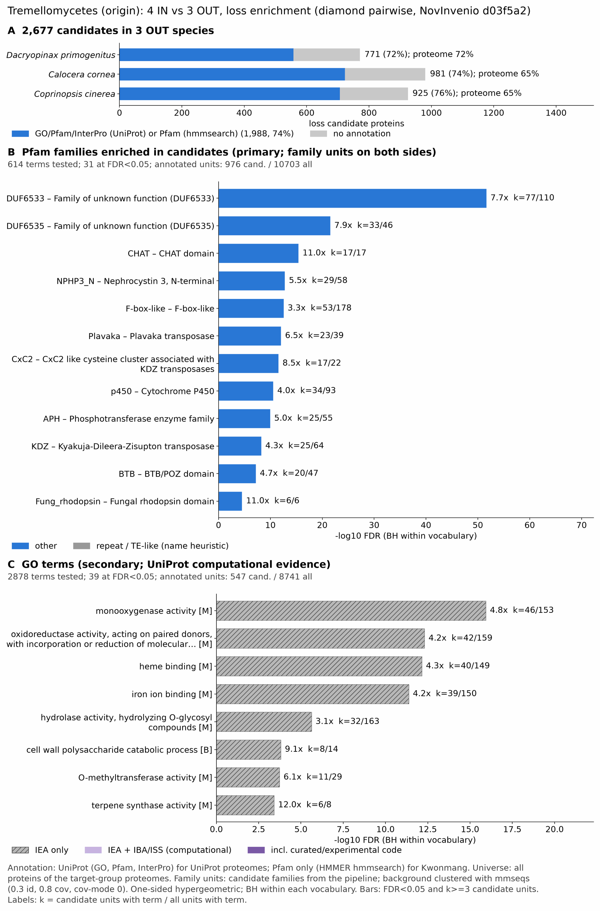

yc tremellomycetes: functional enrichment (loss)
One-sided hypergeometric test per term; Benjamini-Hochberg FDR within each scope, level and vocabulary. Candidates are the loss candidates: gene families present in the OUT group and absent from the IN group. Universe: proteome. Background clustered: True (33966 sequences in 20933 clusters, mmseqs easy-cluster --min-seq-id 0.3 -c 0.8). Family level: one unit per candidate family and per background cluster.
Sources: Pfam: 2026-01-27-Pfam38.2; InterPro entries: 110.0; GO: releases/2026-07-26; analysis generated 2026-10-24T14:39:13. Source tables: /bigdata/stajichlab/jstajich/projects/NovInvenio_Investigations/studies/fungi/yeast_convergence/yc_tremellomycetes/analysis/enrichment/outputs/loss/proteome_clustered.
Full record: PROVENANCE. Run report: report.html.
Related: yeast_convergence: comparison across contrasts
- Annotation provenance is not fully recorded: PROVENANCE.yaml lists the per-species annotation files and their checksums, but not the UniProt release they come from.
- GO results are secondary. GO annotations include computational evidence (IEA, IBA); the GO evidence column shows if a term has non-IEA support.
- Candidate families (pipeline clustering of candidates) and background clusters (mmseqs clustering of the background proteome) are made by different runs, so family-level counts are not fully comparable.
- Low annotation: the candidate set has less than 50% annotation for GO 33.0%. Enrichment for these vocabularies has low power.
Summary figure

Annotation coverage
Fraction of proteins with at least one term per vocabulary. Universe = all proteins of the species; candidates = the candidate set.
| Species | Set | Proteins | Pfam | Pfam clan | InterPro | GO | Any |
|---|---|---|---|---|---|---|---|
| Dacrprim | universe | 10233 | 65.1% | 53.6% | 71.4% | 56.5% | 71.5% |
| Dacrprim | candidates | 771 | 59.5% | 45.8% | 71.7% | 35.3% | 72.4% |
| Calocorn | universe | 13076 | 58.8% | 47.9% | 64.7% | 48.7% | 64.9% |
| Calocorn | candidates | 981 | 63.1% | 48.1% | 73.4% | 30.7% | 73.7% |
| Ccin | universe | 13334 | 58.5% | 47.3% | 64.8% | 47.5% | 64.9% |
| Ccin | candidates | 925 | 65.1% | 49.1% | 76.2% | 33.5% | 76.4% |
| ALL_OUT | universe | 36643 | 60.5% | 49.2% | 66.6% | 50.4% | 66.8% |
| ALL_OUT | candidates | 2677 | 62.8% | 47.8% | 73.9% | 33.0% | 74.3% |
Tests summary
Per vocabulary: terms with FDR < 0.05 / terms tested. Protein level counts proteins; family level counts candidate families and background clusters.
| Scope | Level | Cand. units | Pfam sig / tested | Pfam clan sig / tested | InterPro sig / tested | GO sig / tested |
|---|---|---|---|---|---|---|
| whole_set | family | 1694 | 31 / 614 | 9 / 293 | 45 / 1365 | 39 / 2878 |
| whole_set | protein | 2677 | 62 / 1451 | 19 / 403 | 121 / 3141 | 103 / 4262 |
| Calocorn | family | 750 | 14 / 297 | 4 / 212 | 22 / 724 | 8 / 2199 |
| Calocorn | protein | 981 | 25 / 425 | 7 / 240 | 37 / 992 | 16 / 2357 |
| Ccin | family | 709 | 12 / 311 | 5 / 227 | 16 / 770 | 10 / 2288 |
| Ccin | protein | 925 | 21 / 438 | 12 / 242 | 43 / 1041 | 23 / 2420 |
| Dacrprim | family | 659 | 17 / 267 | 6 / 210 | 24 / 661 | 11 / 2195 |
| Dacrprim | protein | 771 | 23 / 355 | 8 / 226 | 37 / 882 | 19 / 2332 |
Top 25 Pfam terms (whole set, family level)
25 rows shown, ordered by FDR then p-value; 25 have FDR < 0.05 (bold). 4 are tagged TE: transposable-element families, flagged by name (heuristic, not a test).
| Term | Name | k / N cand. | n / M bg | Fold | FDR (BH) |
|---|---|---|---|---|---|
| PF20151 | DUF6533: Family of unknown function (DUF6533) | 77 / 976 | 110 / 10703 | 7.676 | 2.16e-52 |
| PF20153 | DUF6535: Family of unknown function (DUF6535) | 33 / 976 | 46 / 10703 | 7.867 | 2.82e-22 |
| PF12770 | CHAT: CHAT domain | 17 / 976 | 17 / 10703 | 10.966 | 3.76e-16 |
| PF24883 | NPHP3_N: Nephrocystin 3, N-terminal | 29 / 976 | 58 / 10703 | 5.483 | 1.61e-13 |
| PF12937 | F-box-like: F-box-like | 53 / 976 | 178 / 10703 | 3.265 | 2.78e-13 |
| PF18759 | Plavaka: Plavaka transposase TE | 23 / 976 | 39 / 10703 | 6.467 | 8.73e-13 |
| PF18803 | CxC2: CxC2 like cysteine cluster associated with KDZ transposases TE | 17 / 976 | 22 / 10703 | 8.474 | 2.72e-12 |
| PF00067 | p450: Cytochrome P450 | 34 / 976 | 93 / 10703 | 4.009 | 2.79e-11 |
| PF01636 | APH: Phosphotransferase enzyme family | 25 / 976 | 55 / 10703 | 4.985 | 1.08e-10 |
| PF18758 | KDZ: Kyakuja-Dileera-Zisupton transposase TE | 25 / 976 | 64 / 10703 | 4.284 | 5.66e-09 |
| PF00651 | BTB: BTB/POZ domain | 20 / 976 | 47 / 10703 | 4.666 | 6.54e-08 |
| PF20684 | Fung_rhodopsin: Fungal rhodopsin domain | 6 / 976 | 6 / 10703 | 10.966 | 2.90e-05 |
| PF26410 | GH5_mannosidase: GH family 5 beta-mannosidase-like | 8 / 976 | 13 / 10703 | 6.748 | 1.86e-04 |
| PF08719 | NADAR: NADAR domain | 7 / 976 | 11 / 10703 | 6.978 | 4.99e-04 |
| PF13374 | TPR_10: Tetratricopeptide repeat | 7 / 976 | 11 / 10703 | 6.978 | 4.99e-04 |
| PF00891 | Methyltransf_2: O-methyltransferase domain | 6 / 976 | 8 / 10703 | 8.225 | 5.18e-04 |
| PF10164 | BRI3: Brain protein I3 | 5 / 976 | 6 / 10703 | 9.138 | 0.001 |
| PF11807 | UstYa: Mycotoxin biosynthesis protein UstYa | 5 / 976 | 6 / 10703 | 9.138 | 0.001 |
| PF27671 | YPL277C_N: YPL277C N-terminal domain | 5 / 976 | 6 / 10703 | 9.138 | 0.001 |
| PF19086 | Terpene_syn_C_2: Terpene synthase family 2, C-terminal metal binding | 6 / 976 | 9 / 10703 | 7.311 | 0.001 |
| PF18721 | CxC6: CxC6 like cysteine cluster associated with KDZ transposases TE | 7 / 976 | 13 / 10703 | 5.905 | 0.002 |
| PF20703 | nSTAND1: Novel STAND NTPase 1 | 6 / 976 | 10 / 10703 | 6.58 | 0.002 |
| PF00931 | NB-ARC: NB-ARC domain | 5 / 976 | 7 / 10703 | 7.833 | 0.003 |
| PF00648 | Peptidase_C2: Calpain family cysteine protease | 4 / 976 | 5 / 10703 | 8.773 | 0.008 |
| PF04749 | PLAC8: PLAC8 family | 4 / 976 | 5 / 10703 | 8.773 | 0.008 |
Top 25 InterPro terms (whole set, family level)
25 rows shown, ordered by FDR then p-value; 25 have FDR < 0.05 (bold).
| Term | Name | k / N cand. | n / M bg | Fold | FDR (BH) |
|---|---|---|---|---|---|
| IPR045340 | Domain:Domain of unknown function DUF6533 | 77 / 1203 | 110 / 12315 | 7.166 | 1.29e-49 |
| IPR045338 | Domain:Domain of unknown function DUF6535 | 33 / 1203 | 46 / 12315 | 7.344 | 6.09e-21 |
| IPR024983 | Domain:CHAT domain | 17 / 1203 | 17 / 12315 | 10.237 | 2.33e-15 |
| IPR050364 | Family:Cytochrome P450 monooxygenase, fungi | 29 / 1203 | 48 / 12315 | 6.185 | 2.33e-15 |
| IPR032675 | Homologous_superfamily:Leucine-rich repeat domain superfamily | 101 / 1203 | 442 / 12315 | 2.339 | 3.20e-14 |
| IPR056884 | Domain:Nephrocystin 3-like, N-terminal | 29 / 1203 | 58 / 12315 | 5.118 | 1.54e-12 |
| IPR011333 | Homologous_superfamily:SKP1/BTB/POZ domain superfamily | 36 / 1203 | 89 / 12315 | 4.141 | 3.16e-12 |
| IPR041078 | Domain:Plavaka transposase | 23 / 1203 | 39 / 12315 | 6.037 | 6.63e-12 |
| IPR041457 | Domain:CxC2-like cysteine cluster, KDZ transposase-associated | 17 / 1203 | 22 / 12315 | 7.91 | 1.50e-11 |
| IPR036396 | Homologous_superfamily:Cytochrome P450 superfamily | 38 / 1203 | 105 / 12315 | 3.705 | 2.80e-11 |
| IPR051678 | Family:Aminoglycoside Phosphotransferase Enzymes | 30 / 1203 | 69 / 12315 | 4.451 | 3.20e-11 |
| IPR001810 | Domain:F-box domain | 64 / 1203 | 251 / 12315 | 2.61 | 3.54e-11 |
| IPR001128 | Family:Cytochrome P450 | 34 / 1203 | 93 / 12315 | 3.743 | 2.86e-10 |
| IPR036047 | Homologous_superfamily:F-box-like domain superfamily | 61 / 1203 | 247 / 12315 | 2.528 | 4.87e-10 |
| IPR000210 | Domain:BTB/POZ domain | 27 / 1203 | 63 / 12315 | 4.387 | 5.58e-10 |
| IPR002575 | Domain:Aminoglycoside phosphotransferase | 25 / 1203 | 55 / 12315 | 4.653 | 6.45e-10 |
| IPR040521 | Family:Kyakuja-Dileera-Zisupton transposase | 25 / 1203 | 64 / 12315 | 3.999 | 3.31e-08 |
| IPR007111 | Domain:NACHT nucleoside triphosphatase | 9 / 1203 | 12 / 12315 | 7.678 | 1.00e-05 |
| IPR049326 | Domain:Rhodopsin domain, fungi | 6 / 1203 | 6 / 12315 | 10.237 | 6.17e-05 |
| IPR038921 | Family:Uncharacterized protein YOR389W-like | 5 / 1203 | 5 / 12315 | 10.237 | 6.03e-04 |
| IPR045053 | Family:Mannan endo-1,4-beta-mannosidase-like | 8 / 1203 | 14 / 12315 | 5.85 | 9.24e-04 |
| IPR051035 | Family:Mitochondrial inheritance protein 9 | 7 / 1203 | 11 / 12315 | 6.514 | 0.001 |
| IPR001077 | Domain:O-methyltransferase, C-terminal domain | 6 / 1203 | 8 / 12315 | 7.678 | 0.001 |
| IPR016461 | Family:O-methyltransferase-like | 6 / 1203 | 8 / 12315 | 7.678 | 0.001 |
| IPR034686 | Family:Terpene cyclase-like 2 | 6 / 1203 | 8 / 12315 | 7.678 | 0.001 |
Top 15 GO terms (whole set, family level) — secondary, computational evidence (IEA/IBA) included
15 rows shown, ordered by FDR then p-value; 15 have FDR < 0.05 (bold).
| Term | Name | k / N cand. | n / M bg | Fold | FDR (BH) | GO evidence | Families with non-IEA |
|---|---|---|---|---|---|---|---|
| GO:0004497 | molecular_function:monooxygenase activity | 46 / 547 | 153 / 8741 | 4.804 | 1.16e-16 | IEA_only | 0 |
| GO:0016705 | molecular_function:oxidoreductase activity, acting on paired donors, with incorporation or reduction of molecular oxygen | 42 / 547 | 159 / 8741 | 4.221 | 4.93e-13 | IEA_only | 0 |
| GO:0020037 | molecular_function:heme binding | 40 / 547 | 149 / 8741 | 4.29 | 7.02e-13 | IEA_only | 0 |
| GO:0046906 | molecular_function:tetrapyrrole binding | 40 / 547 | 149 / 8741 | 4.29 | 7.02e-13 | IEA_only | 0 |
| GO:0005506 | molecular_function:iron ion binding | 39 / 547 | 150 / 8741 | 4.155 | 4.17e-12 | IEA_only | 0 |
| GO:0004553 | molecular_function:hydrolase activity, hydrolyzing O-glycosyl compounds | 32 / 547 | 163 / 8741 | 3.137 | 2.36e-06 | IEA_only | 0 |
| GO:0016798 | molecular_function:hydrolase activity, acting on glycosyl bonds | 32 / 547 | 181 / 8741 | 2.825 | 2.81e-05 | IEA_only | 0 |
| GO:0044347 | biological_process:cell wall polysaccharide catabolic process | 8 / 547 | 14 / 8741 | 9.131 | 1.53e-04 | IEA_only | 0 |
| GO:0046355 | biological_process:mannan catabolic process | 8 / 547 | 14 / 8741 | 9.131 | 1.53e-04 | IEA_only | 0 |
| GO:0008171 | molecular_function:O-methyltransferase activity | 11 / 547 | 29 / 8741 | 6.061 | 1.85e-04 | IEA_only | 0 |
| GO:0010333 | molecular_function:terpene synthase activity | 6 / 547 | 8 / 8741 | 11.985 | 3.84e-04 | IEA_only | 0 |
| GO:0010412 | biological_process:mannan metabolic process | 8 / 547 | 17 / 8741 | 7.52 | 6.75e-04 | IEA_only | 0 |
| GO:0016985 | molecular_function:mannan endo-1,4-beta-mannosidase activity | 8 / 547 | 17 / 8741 | 7.52 | 6.75e-04 | IEA_only | 0 |
| GO:0016998 | biological_process:cell wall macromolecule catabolic process | 8 / 547 | 17 / 8741 | 7.52 | 6.75e-04 | IEA_only | 0 |
| GO:0044550 | biological_process:secondary metabolite biosynthetic process | 9 / 547 | 24 / 8741 | 5.992 | 0.001 | IEA_only | 0 |
Actin cytoskeleton controls
Known actin-related families and how many of their proteins pass each filter. Protein ID columns are left out.
| control | pfam_ids | desc_regex | OUT_universe | OUT_in_matrix | OUT_pass_outgroup_rule | candidates | near_miss_in1 | near_miss_in2 | n_Dacrprim | n_Calocorn | n_Ccin | n_CneoH99 | n_Kwonmang | n_Tricasah | n_Tremes |
|---|---|---|---|---|---|---|---|---|---|---|---|---|---|---|---|
| Arp2/3 ARPC2 (P34-Arc) | PF04045 | 3 | 3 | 3 | 0 | 0 | 0 | 1 | 1 | 1 | 1 | 1 | 1 | 1 | |
| Arp2/3 ARPC3 (P21-Arc) | PF04062 | 3 | 3 | 3 | 0 | 0 | 0 | 1 | 1 | 1 | 1 | 1 | 1 | 1 | |
| Arp2/3 ARPC4 | PF05856 | 3 | 3 | 3 | 0 | 0 | 0 | 1 | 1 | 1 | 1 | 1 | 1 | 1 | |
| Arp2/3 ARPC5 (P16-Arc) | PF04699 | 4 | 4 | 4 | 0 | 0 | 0 | 2 | 1 | 1 | 1 | 1 | 1 | 1 | |
| Arp2/3 ARPC1 (description only) | arp2/3 complex.*(41|p41|subunit 1)|ARPC1 | 0 | 0 | 0 | 0 | 0 | 0 | 0 | 0 | 0 | 0 | 0 | 0 | 0 | |
| Arp2 / Arp3 (description only) | actin-related protein (2|3)\b|\bARP[23]\b | 19 | 19 | 19 | 0 | 0 | 0 | 8 | 6 | 5 | 5 | 0 | 6 | 5 | |
| WAVE complex NCKAP1 | PF09735 | 0 | 0 | 0 | 0 | 0 | 0 | 0 | 0 | 0 | 0 | 0 | 0 | 0 | |
| WAVE complex CYFIP (FragX_IP) | PF05994 | 0 | 0 | 0 | 0 | 0 | 0 | 0 | 0 | 0 | 0 | 0 | 0 | 0 | |
| WAVE complex ABI | PF07815|PF27594 | 0 | 0 | 0 | 0 | 0 | 0 | 0 | 0 | 0 | 0 | 0 | 0 | 0 | |
| SCAR/WAVE (SCAR_helical) | PF27569 | 0 | 0 | 0 | 0 | 0 | 0 | 0 | 0 | 0 | 0 | 0 | 0 | 0 | |
| WASP family (WH1) | PF00568 | 4 | 3 | 3 | 0 | 0 | 0 | 1 | 1 | 2 | 1 | 1 | 1 | 1 | |
| WH2 motif (WASP, WAVE, others) | PF02205 | 7 | 7 | 7 | 0 | 1 | 0 | 3 | 2 | 2 | 2 | 2 | 2 | 2 | |
| Formin FH2 | PF02181 | 4 | 4 | 4 | 0 | 0 | 0 | 1 | 1 | 2 | 1 | 2 | 1 | 2 | |
| Formin Drf_GBD / Drf_FH3 / Drf_DAD | PF06371|PF06367|PF06345 | 7 | 7 | 7 | 0 | 0 | 0 | 2 | 2 | 3 | 2 | 3 | 2 | 3 | |
| Ena/VASP (VASP_tetra) | PF08776 | 0 | 0 | 0 | 0 | 0 | 0 | 0 | 0 | 0 | 0 | 0 | 0 | 0 | |
| Coronin (description only) | coronin | 3 | 3 | 3 | 0 | 0 | 0 | 1 | 1 | 1 | 1 | 0 | 1 | 1 | |
| Cortactin (HS1_rep) | PF02218 | 0 | 0 | 0 | 0 | 0 | 0 | 0 | 0 | 0 | 0 | 0 | 0 | 0 | |
| Myosin 2 tail (Myosin_tail_1) | PF01576 | 1 | 1 | 1 | 0 | 0 | 0 | 0 | 0 | 1 | 0 | 0 | 0 | 0 | |
| Myosin head (all myosins) | PF00063 | 14 | 14 | 14 | 0 | 0 | 0 | 4 | 5 | 5 | 4 | 4 | 6 | 8 |
Page written by bin/generate_enrichment_page.py.